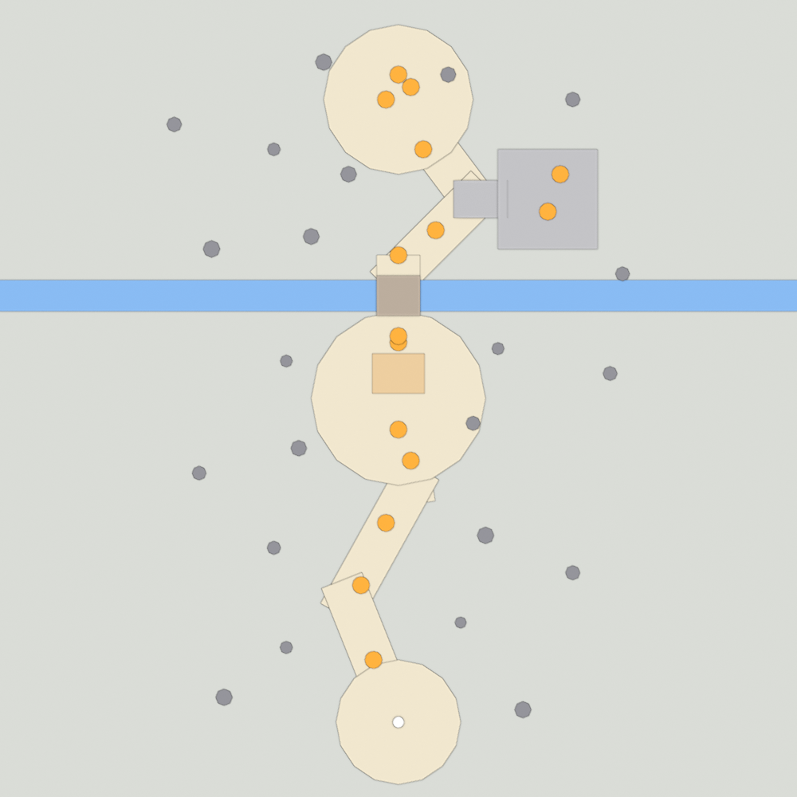
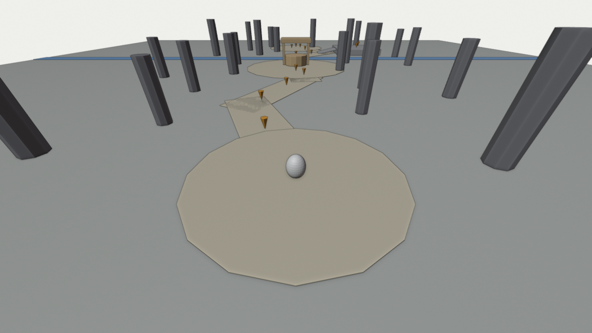
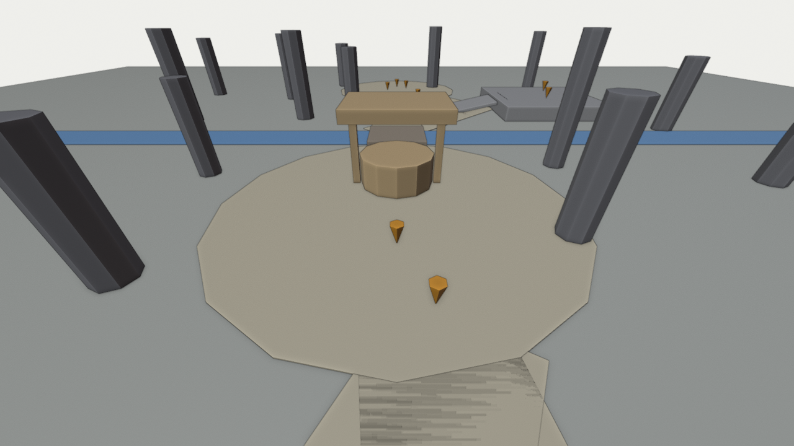
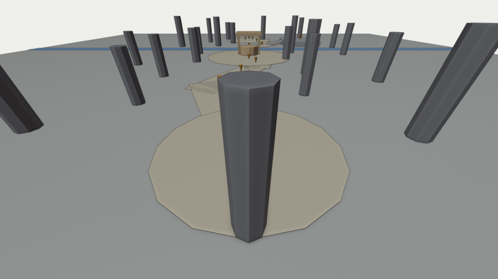

Lesson 15 · Level design
Block out the forest
Before any pretty trees: measure your rabbit, sketch a route, build the whole level from grey blocks, and watch your daughters play it.

Warm-up: from memory
From Lesson 2: which Godot node type is right for a tree trunk the rabbit must walk around?
Show answer
StaticBody3D: solid, and never moved by physics. Today the CSG node's Use Collision option creates that for you.From Lesson 3: when you watched your daughters play the coin game, what did they enjoy, and where did they struggle?
Show answer
Only you know. Write it down: that's your first design input. (You told me they laughed a lot at the dance.)The ideas (short)
From The Level Design Book: “A shape might start as a gray block -- then after months of playtesting and art passing, the block becomes a stack of barrels.”
Blockout. “A blockout (also blockmesh or graybox) is a 3D rough draft level built with simple 3D shapes, but without any details or polished art assets.” The book is direct about why: “The purpose of the blockout is to experiment.” Moving a grey box takes seconds. Moving a forest you've decorated takes an evening. So the layout gets fixed while it's still cheap to change.
Metrics. “In level design, metrics are the sense of scale, distance, and measurements across the entire level / game.” Player metrics are “factual numbers measured in-engine like player size, movement speed, maximum jump height”. I measured yours in Godot 4.7.2:
| Your rabbit | Measured | Design rule for a 4- and 6-year-old (my suggestion) |
|---|---|---|
| Running speed | 4.5 m/s | A 30 m path takes about 7 s, so space things out but never leave long empty stretches |
| Running jump height | 1.89 m | Ledges at most 1.0 m. A small child's jump is late and imprecise, so stay well below the maximum |
| Running jump distance | 5.7 m | Gaps at most 2.5 m, and falling in should be harmless (shallow water, not a pit) |
| Steepest walkable slope | 45° (Godot's default) | Ramps at 15–25°. Steeper than 45° is a wall |
| Steps | The rabbit can't climb steps | Every height change needs a ramp or a deliberate jump |
| Rabbit size | 1.15 m tall, 0.6 m wide | Paths at least 3 m wide: young kids steer in big zigzags |
| Camera | Fixed: 6 m up, 8 m behind, always looking “north” | See the camera rule below |
The camera rule. Your camera always sits south of the rabbit and looks north. So anything tall south of a path (between the path and the camera) will hide the rabbit. Progress should go up the screen, with tall things beside or ahead of the path:






Flow and the critical path. “In level design, flow is how it generally feels to move along different paths / between different parts of a level.” The critical path is “the ideal player route to progress”. For your players, the critical path is the carrot trail. Carrots work like breadcrumbs: the next one should always be in view of the last.
Landmarks. A big, unique thing visible from far away (your well) gives everyone a place to aim for and a way to say where they are (“I'm at the well!”). In the example, the well is visible from the start.
Step 1: Sketch a route (10 min, on paper)
Draw your forest from above, like the map. Keep it small: about 40 × 60 m and 4 areas. Mark:
- The start (south) and the end (north). Progress goes up the screen.
- One landmark in the middle, visible from the start (the well).
- One small challenge using your metrics: a ramp onto a 1 m hill, or a 2 m gap over a stream.
- One secret: a carrot slightly off the path, behind something. Kids love finding things.
- The carrot trail: roughly one carrot every 4–6 m along the path, 12–15 in total.
Step 2: Block it out in Godot (CSG)
The Godot docs: “Level prototyping is one of the main uses of CSG in Godot.” And: “In the interest of performance, make sure CSG geometry remains relatively simple.” That's fine for a blockout.
CSG nodes are simple shapes (box, cylinder…) that combine with each other. Every shape under the Blockout node is solid for the rabbit, because Use Collision is switched on there. The editor UI is new to you, so here are the full steps:
- Open
levels/forest.tscn. SelectBlockoutand look atGround(a 60 × 60 m grey box). Resize it to your sketch in the Inspector (Size). - Get a map view: click the green Y circle of the axis gizmo (top right of the 3D view) to look straight down. Middle-mouse drag orbits. Hold right-mouse and use WASD to fly. No numpad needed.
- The path (it's paint, not a wall): in the
Pathsnode (no collision) there's aPathSegmentstrip and aClearingdisc ready for you. Duplicate the strip (Ctrl+D), set its length with Size z, turn it with Rotation Y, and slide its end onto the previous strip. Then drop a small disc (Clearing with Radius about 1.6) on each corner to round it off. Big discs make clearings. Pictures and numbers are in the cheat sheet. - Hills and platforms: select
Blockout, Ctrl+A →CSGBox3D. Set its Size (for example 8 × 1 × 8 for a 1 m high hill) and its Position (Y = half its height, so it sits on the ground). - Ramps: a thin CSGBox3D (say 3 × 0.2 × 3.5) rotated about 15–20° around X, with its low end touching the ground and its high end meeting the hill. Tested: a 20° ramp takes the rabbit onto a 1 m hill without jumping.
- Tree trunks:
CSGCylinder3Dwith Radius 0.5, Height 5, and Y = 2.5. Duplicate with Ctrl+D. Put them beside the path, never between it and the camera. - A stream bed: a CSGBox3D under
Groundin the tree, with Operation set to Subtraction. The docs: “The second shape is subtracted from the first, leaving a dent with its shape.” Make it 2–2.5 m wide and 0.5 m deep, so it's harmless to fall into. Node order matters: the subtracting box must come afterGround.
Important (tested): the rabbit can't walk out of a dent with vertical sides. It can only jump out, and a 4-year-old may not think to. So add a way out: a small ramp inside the bed (a CSGBox3D tilted about 20°, from the bed floor up to the far bank), placed after the subtracting box in the tree so it isn't cut away. Or put a bridge over the stream, as in the example. In my test the rabbit walked straight out up such a ramp. - Landmark placeholder: a big CSGCylinder3D plus a box “roof”, about 3 m tall. Later it becomes your real well.
- Snapping: toggle grid snapping with the magnet icon in the toolbar or Y (“Use Snap (Y): If enabled, movement, and rotation snap to grid.”), or hold Ctrl while dragging. That keeps hills and ramps lined up.
- Start position: move the
Rabbitnode to your start. The camera follows automatically, from anywhere.
Want colours to tell areas apart? Give a CSG node a Material (new StandardMaterial3D, Albedo colour): blue for water, sand for paths. Keep everything else grey. Grey is the point.
Step 3: Lay the carrot trail
- Drag
carrot/carrot.tscnfrom the FileSystem dock onto theCarrotsnode, then Ctrl+D to place more along your path. The level counts them automatically. - Check the breadcrumb rule: press F6 and walk the route. At every carrot, can you see the next one?
- Put one or two carrots on top of your challenge (the hill) and one as the secret. Leave a little group at the end, so the finale happens somewhere nice.
Step 4: Check it like a level designer
Play it yourself before the girls do. Go through these and fix anything that fails:
- Every carrot is reachable without a perfect jump (try with sloppy input, as a 4-year-old would).
- The rabbit is never hidden behind something for more than a moment.
- You can't get stuck: every dip has a way out, and every ledge has a ramp or an easy jump.
- From the start, you can see the landmark or the first few carrots.
- The level edge is obvious. Falling off just respawns the rabbit, but a row of trunks or a hill at the border is friendlier.
Step 5: Playtest with your daughters
“Playtesting is a foundational skill and process in game design.”
A grey forest is enough: kids play shapes, not textures. Same rules as Lesson 3:
- Say only “find all the carrots”. Don't explain the map.
- Watch without helping (as long as they're not getting upset). Note where they hesitate, get lost or fail a jump, and what makes them laugh or point.
- Let each of them play. A 4-year-old and a 6-year-old will struggle in different places.
- Bring your notes to the next session. They decide what changes before any art goes in.
Check yourself
Why build the forest from grey blocks before using your real trees and props?
Your rabbit jumps 1.89 m high. How high should a ledge be for a 4-year-old?
With your fixed camera, where should big trees not go?
What does the carrot trail do for a player who can't read a map?
For next session
- Bring your playtest notes: where they got stuck, and what they loved.
- From memory: three of your rabbit's metrics and the design rule each one implies.
- From Lesson 14: the lattice workflow in four steps.
Next, alternating as agreed: a Blender lesson making the forest's real assets (low-poly trees and props at a scale that fits these metrics, each prop its own object), then an art pass swapping grey blocks for them.
Ramp the rabbit slides off, a stream it can't climb out of, or a camera angle that hides everything? Tell me which, or save the scene and I'll inspect it. Physics fixes are my job now. Your job is the design.